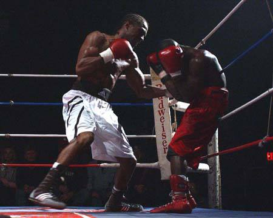
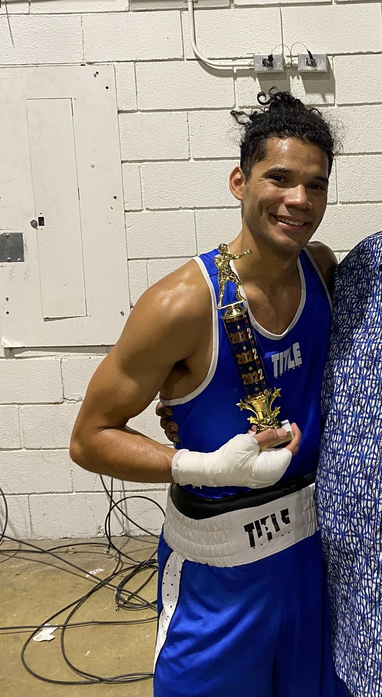

Dr. Morgan Hines Sr. founded the Columbia Boxing Club out of his home in the 1990s, training local youths and producing many outsanding amateur and proffesional fighters throughout the years. He is a father, a mentor, a coach, and a talented artist. Morgan is also a local dentist in Columbia serving the community since the 1990s. He is married to Gwen Hines and commonly reffered to as "Doc" by his friends and family.
Dr. Morgan Hines (far left), selected Mid-State Golden Gloves "Coach of the Year"
Doc Hines working pads with a young boxer.
Doc in ring with one of his proffesional fighters.
A portion of the amateur and proffesional fighters that have worked with Doc Hines CBC over the years.
Over the past few decades Doc's team of fighters have been a recurring presence in major amateur tournaments.
Even as recently as 2022 Doc Hines CBC is still making their presence known in the amateur world, Doc Hines is seen here with his boxer after he winning the regional Golden Gloves tournament in Memphis Tennessee.
Coaches
Head Coach
Jerome Pillow "J-one"

About:
Jerome Pillow was trined by Doc Hines since the age of 7, and was an outstanding amateur boxer with over 200 amateur fights and went on to be undefeated as a proffesional with a record of 16 victories. He is a father, a barber and long time trainer and mentor for the youth in Columbia.
J One can be seen on the left, photo taken after his victory leading him to a national tournament.
J-one seen here jabbing an opponent.
AND THE WINNER IS !
place holder this shows a description and time of photo 4
place holder this shows a description and time of photo 5
J-one (left) with his fighter after winning the Regional Golden Gloves Tournament in 2022
Assistant Coaches
Frank
Gabe

Antonio
Contact and Information
The best way to contact is to call or text one of the coaches listed above. Let them know how you found thier number and that you are interested in coming to the gym.We are open to the community FREE of charge, donations are welcome, whether you have a youth in need of a constructive hobby and mentorship, or you are an adult interested in losing weight,having fun or learning self defense all people are welcome at this gym
Contact list
Jerome : (931)-797-4717
Frank : (615)-753-8709
Gabe :(615)-753-8709
Antonio:(615)-854-9901
Hours
Monday-Friday 6pm - 8pm
Location
The gym does not have a physical adress, over the years it has been shared through word of mouth, keeping a tight community of members who knew its location. It is found behind the outlet of buildings on Theta Pike via Nasvhille Hwy in Columbia Tn. Please refer to the google image for a representation of the location, and the pin dropped link placed below it, feel free to ask coaches for help finding it if not understood.
For the pin dropped location via google maps CLICK HERE